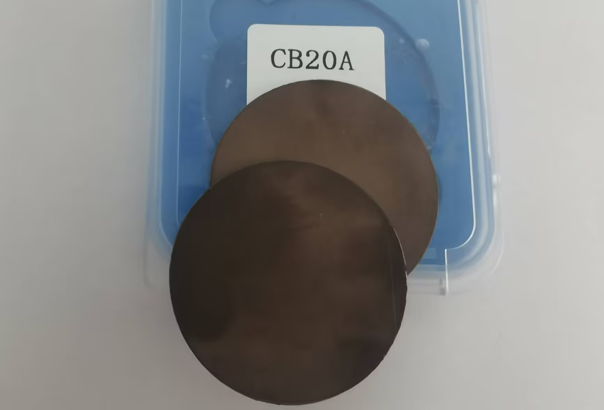
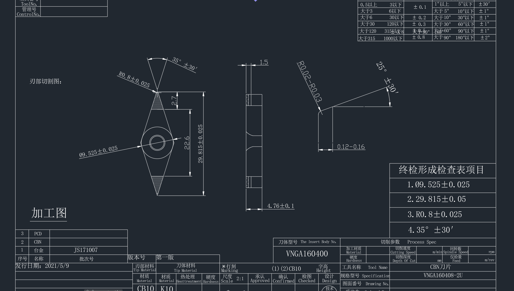
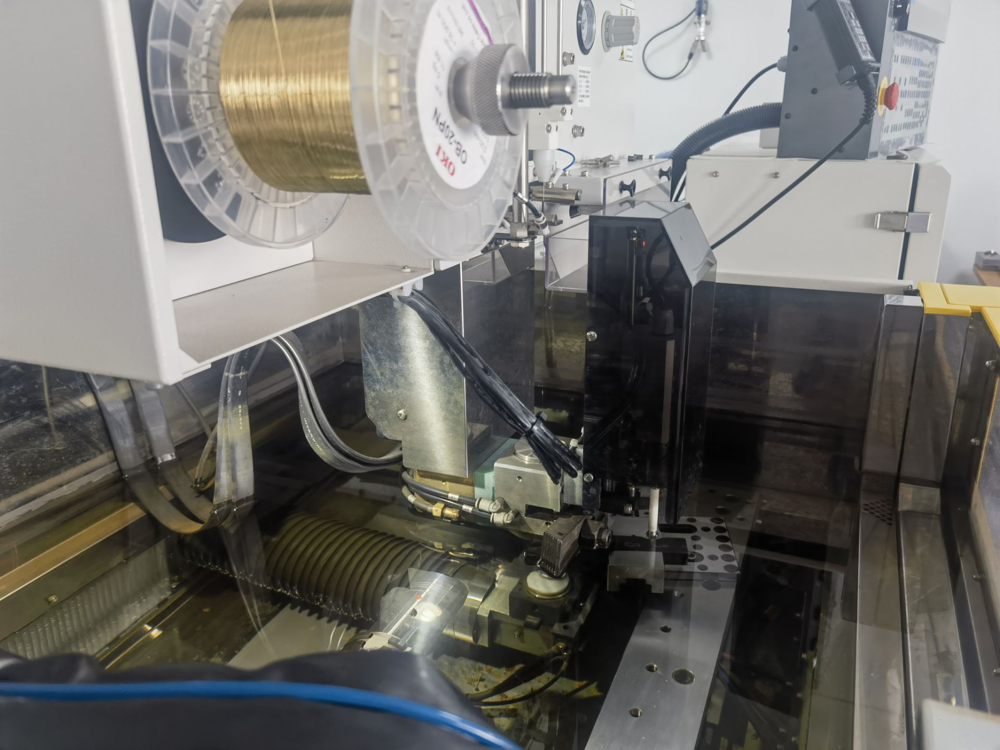
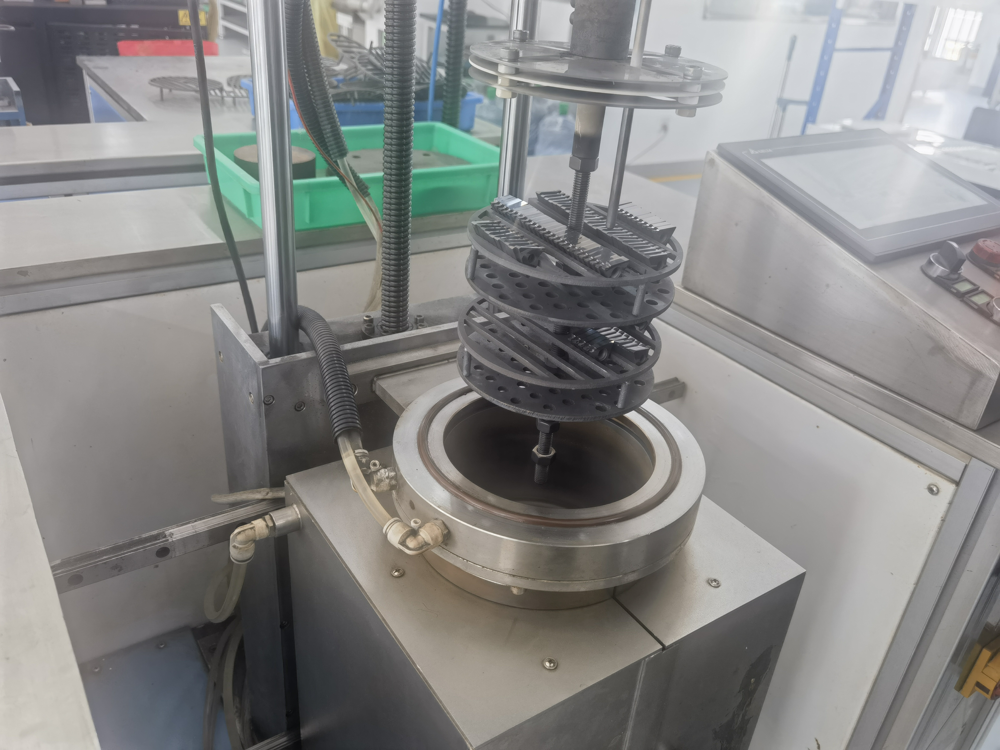
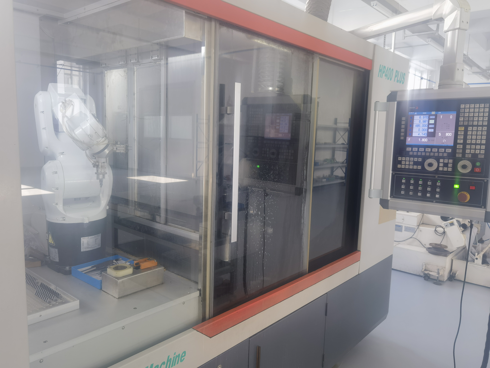
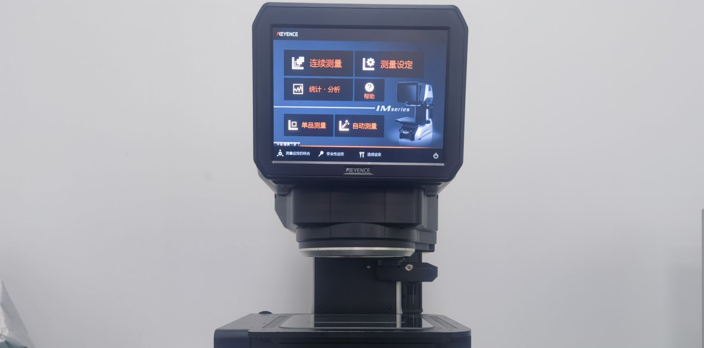
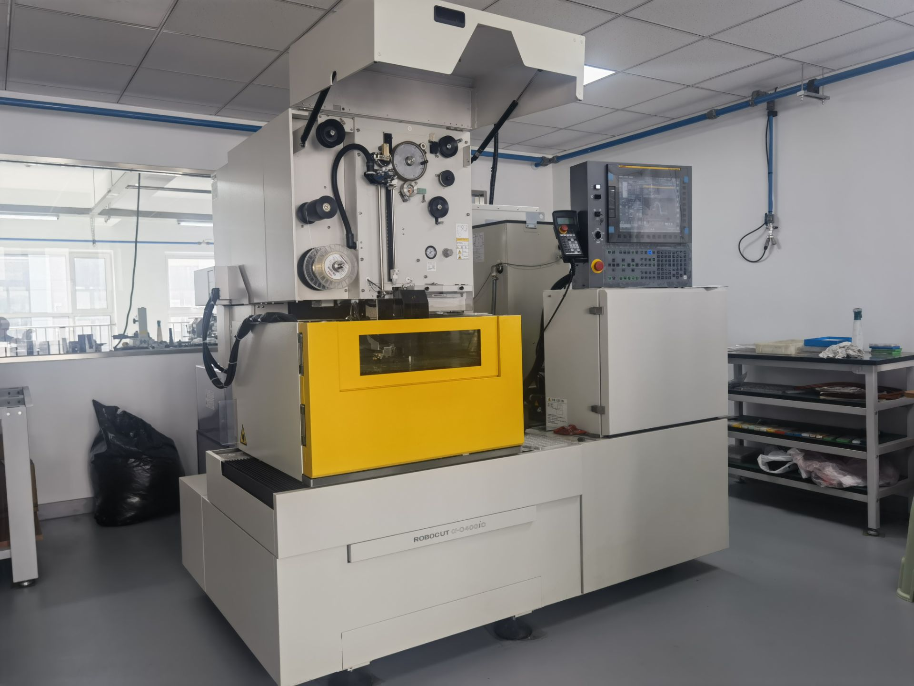
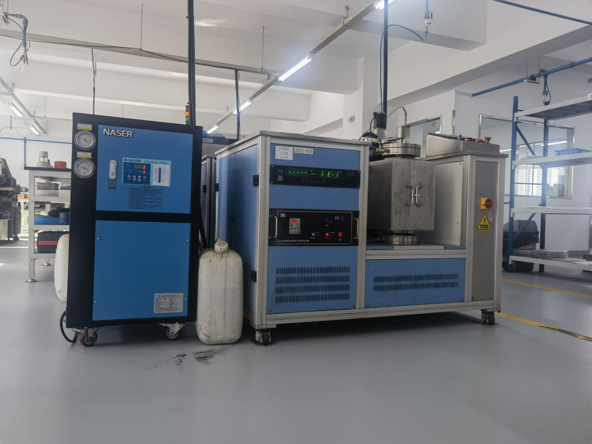
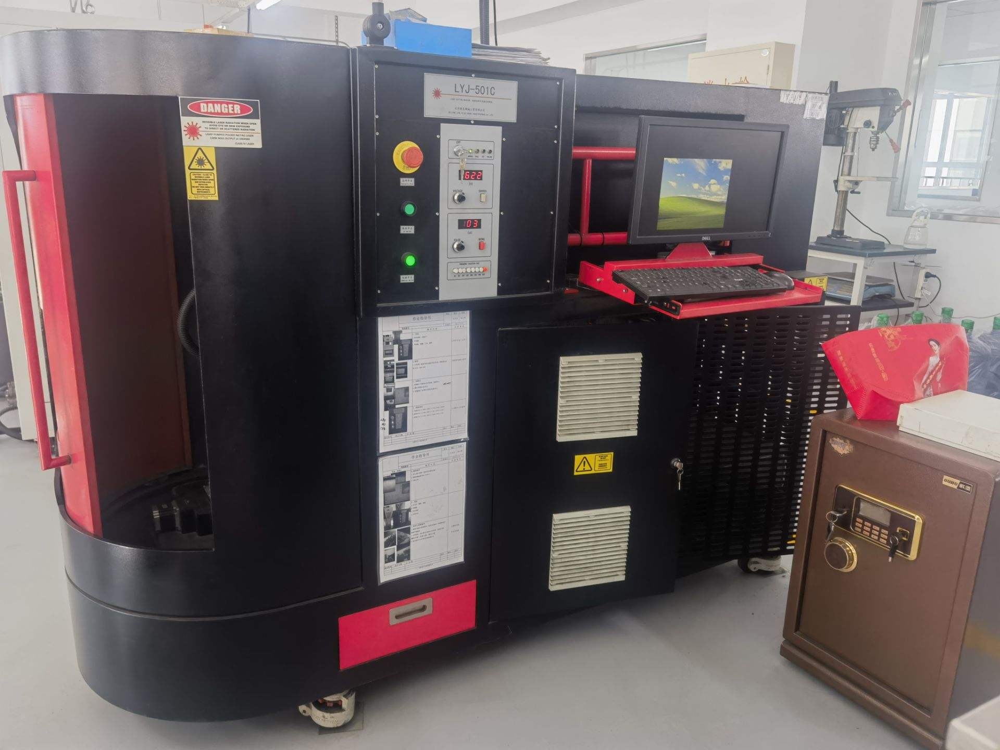

原材料から完成品まで、すべての工程を厳格に管理し、優れた工具性能を実現します
すべての原材料は国内外の信頼できるサプライヤーから調達し、入荷前に厳格な品質検査を実施。PCD/PCBNコンパクトは高精度機器で硬度、密度、内部欠陥を検査し、材料性能が基準を満たしていることを確認します。

顧客要件と被削材特性に基づき、CADソフトウェアを使用して工具設計を最適化。経験豊富なエンジニアチームが、工具形状、切れ刃強度、切りくず排出性を最適化します。

5軸CNCマシニングセンタ、放電加工機、レーザー切断機などの高精度設備を使用し、ミクロン単位の工具幾何精度を実現。工具本体は高品質超硬合金またはハイス鋼を使用し、熱処理により強度と靭性を向上させます。

真空ろう付けまたは高周波溶接技術を使用して、PCD/PCBNチップを工具本体に強固に接合。溶接温度と時間を厳密に制御し、高い接合強度、最小限の熱影響部、チップ損傷を防止します。

輸入高精度CNC研削盤とダイヤモンドホイールを使用して刃先を仕上げ。切れ刃粗さRa≤0.2μmを実現し、鋭い切れ味とスムーズな切りくす排出を確保。最後に表面研磨と防錆処理を施します。

各工具は高精度測定器で総合的に検査。寸法精度、幾何角度、刃先品質などをチェック。合格品は専用パッケージで梱包し、輸送中の損傷を防ぎます。

世界トップクラスの生産・検査設備を採用し、安定した信頼性の高い工具性能を実現

高精度5軸マシニングセンタ、位置決め精度±0.002mm。複雑な工具本体の精密加工に使用。

高精度CNC研削盤、ダイヤモンドホイール搭載。PCD/PCBN工具の高精度研削を実現。

日本製精密放電加工機。PCD/PCBN工具の複雑形状加工に最適。

高温真空ろう付け設備。PCD/PCBNチップと工具本体の高強度接合を実現し、熱影響を最小化。

高精度測定器。工具の寸法、幾何精度を総合的に検査。

高出力ファイバーレーザー切断機。PCD/PCBNコンパクトの精密切断に使用。
ISO9001品質マネジメントシステムを厳格に実施し、すべての工具が最高基準を満たすことを保証
すべての原材料・部品は入荷前に厳格な検査を実施。材料証明書、硬度試験、寸法測定などにより、源流品質を確保。
製造工程に複数の品質管理ポイントを設定。各工程完了後に検査を行い、不適合品は次工程に流しません。
出荷前に各工具に対して全寸法検査・性能試験を実施。寸法精度、刃先品質などを確認。
ISO9001認証取得。定期的に第三者審査を受け、品質マネジメントシステムの有効性を維持。
品質データ分析システムを構築。品質パフォーマンスを定期的に見直し、継続的改善を実施し、製品品質を向上。
顧客品質フィードバック体制を構築。顧客の品質問題に迅速に対応し、顧客ニーズを品質改善の原動力に。
先進的な生産設備と専門チームにより、効率的な納品と安定品質を実現